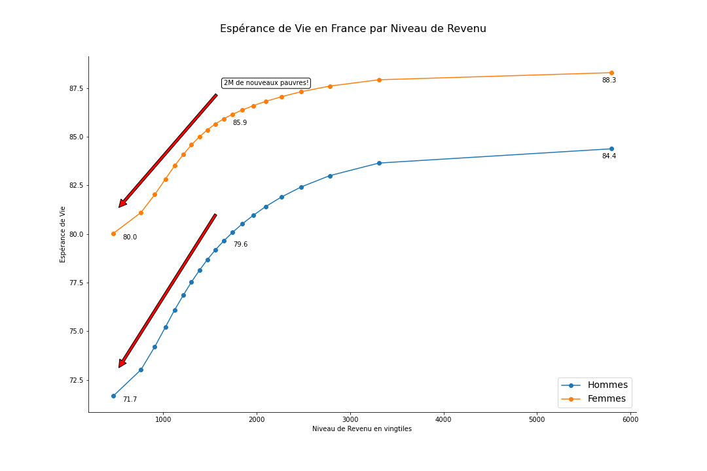

Les Statistiques Alternatives De l'Épidémie
Graphiques mis à jour chaque jour. Texte mis à jour le 18/01/2022.A la une
La France et ses voisins
La France championne d'Europe de l'incidence. Qu'en-est-il des morts?
Situation Mondiale
La vague des cas Omicron explose les précédentes. Elle semble avoir atteint son pic le 15/01.
UK excess mortality
New!! Below 65 years in UK showed in 2020 and 2021 a worrying excess mortality, apparently not due to Covid.
La Vaccination dans le monde
Quelle est le pourcentage de la population vaccinée?

 Vacc vs Non Vacc
Vacc vs Non Vacc
Pass Vaccinal: Qui sont les non vaccinés en France? Combien de lits a l'hôpital encombrent-ils?
Mais aussi pleins d'indicateurs pour suivre et analyser l'épidémie
France: La situation des Hôpitaux
Les hôpitaux sont ils à saturation? Quelle est la dynamique aux urgences?
France: Létalité par âge?
Quelle est la probabilité de mourir lorsqu'infecté par Covid?
England: ICUs/New Admissions situation?
What's the situation of ICUs? The dynamics of new admissions?
England: Mean/Median Age of Coronavirus Deaths
Mean Age is 80 currently decreasing from 82 before.
England: Nursing Homes, a Covid Incubator
The infected population abnormally high for elder persons.
England: Infection Fatality Rate?
What is the probability of dying when infected by Covid?
Pourquoi ce site?
-
Disposer de statistiques alternatives pertinentes
- Comparaison de la France à ses voisins (dynamique de l'épidémie, vaccinations)
- Mener des analyses par âge approfondie et apporter des éléments de réponse à des questions comme:
- Quelle est la probabilité de mourir si infecté par Covid en fonction de l'age?
- Le nouveau variant a-t-il un impact sur la mortalité? Sur les plus jeunes?
- Les hôpitaux sont-il en surchauffe?
- Quelle est l'âge moyen courant d'un mort de Covid? D'une personne en réanimation?
- Quelle est l'espérance de vie d'un mort Covid?
-
Le Coût des Restrictions
- Les pertes en salaire, en emplois conséquents aux restrictions se concentrent sur les plus
fragiles.
«La France franchira la barre des dix millions de pauvres en 2020 millions de pauvres en 2020», selon le Secours catholique, soit 2 millions de plus qu'avant la pandémie.
Une personne pauvre en France ayant une espérance de vie trés inférieure à celle d'un riche (8 ans pour une femme et 13 ans pour un homme), à cette perte de revenu s'ajoutera malheureusement une diminution de l'espérance de vie, et donc bien un coût en année de vie.
- Les morts Covid font partie des classes défavorisées (prédispositions, accès au système de soin) et les confinements accroissent cette inégalité face à l’épidémie en protégeant les plus riches
- Les conséquences de l’arrêt de l’éducation (prépas ouvertes vs. Universités fermées en France est révélateur) se concentrent sur les plus vulnérables et pauvres.
La plupart des trackers de l'épidémie (CovidTracker, Johns Hopkins) reportent des statistiques brutes, telles que fournies par les organismes officielles (Santé Publique France pour la France). Les données sont lues et retranscrites à travers des tables et des graphes.
Ici nous faisons un pas de plus et combinons différentes statistiques et sources de données, procédons à des interpolations dans l'objectif est de produire des statistiques éclairantes
Il n’est pas question ici d’opposer coûts économiques et vies humaines. Les vies perdues dans l’épidémie, les souffrances engendrées sont terribles, il n'est ici pas question de les minimiser.
Néanmoins, en souhaitant sauver la vie des personnes fragiles face à Covid, d’autres vies ont été sacrifiées.
Par exemple et en premier lieu celles des jeunes et étudiants, privés aujourd’hui d’école et de relations sociales et qui subiront demain une perte de salaire, un accès à l’emploi et au logement encore plus sclérosé, des prix de l’immobiliers « inflatés », une souffrance psychologique renforcée. Celles des travailleurs sur lesquels s’exercera une pression fiscale demain. Et celles des plus précaires qui ont vu les inégalités augmentées en 2020 et leur avenir s'assombrir:
Il n’est pas de choix trivial, il ne s’agit pas simplement de sauver des vies. Il s’agit de savoir quelles vies sont sauvées, prolongées, et celles qui seront sacrifiées. Et malheureusement pour ces sacrifiés, les conséquences de ces choix ne se révéleront qu'avec le temps et sont extrêmement difficiles à estimer aujourd’hui.
Les coûts économiques ont cet avantage qu’ils sont estimables rapidement et qu’à travers ces chiffres économiques, c’est toutes les vies sacrifiées, les détresses psychologiques engendrées par les restrictions que l’on cherche à valoriser.
Covid à cette caractéristique d’être différenciant, et de n’être létal que pour les plus âgées et les plus fragiles, c’est-à-dire les classes d’âge diamétralement opposées sur la pyramide des âges à celles qui paieront les conséquences des restrictions.
Donnons une valeur à ces vies sacrifiées et tentons d'apprécier le coût des restrictions à travers :